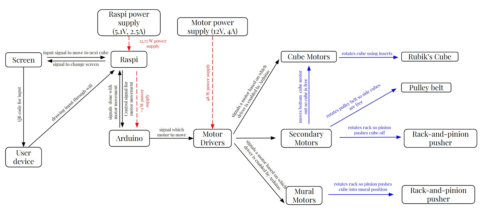
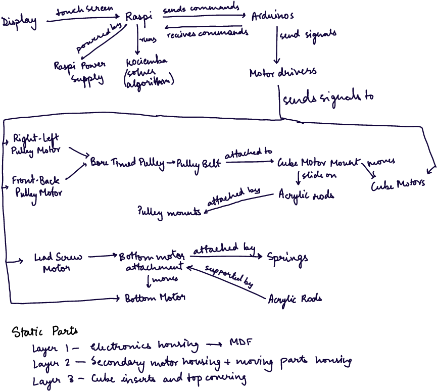

Data and Energy Flow Diagram
Overall System
As seen in the diagram above, the motors act as the bridge between the software and mechanical parts of this project. The Raspi sends control commands to the Arduinos which send control signals to the relevant motor driver, moving the motor and driving the movement of the mechanisms.